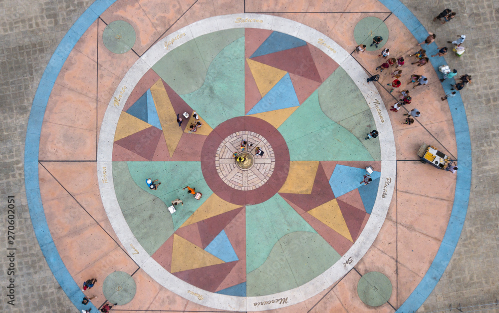
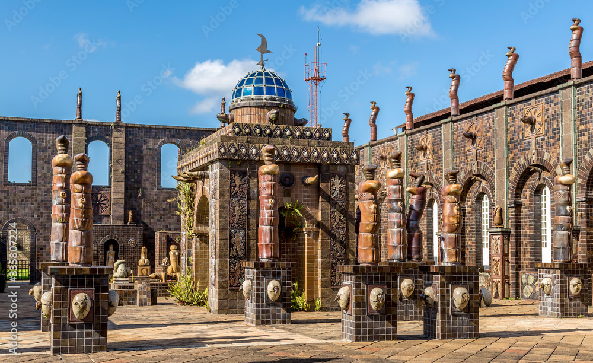
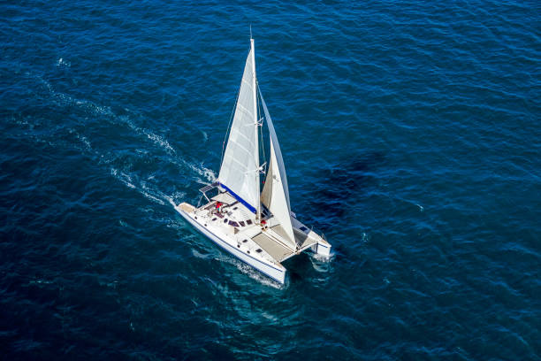

Localizado no bairro do Recife Antigo, o Marco Zero é um dos pontos turísticos mais importantes da capital pernambucana. Ele marca o local onde a cidade começou a se desenvolver e, atualmente, é um espaço vibrante, cheio de história, cultura e lazer.
Atrações imperdíveis
Ao visitar o Marco Zero, você pode contemplar:
A famosa Rosa dos Ventos, obra do artista plástico Cícero Dias, que enfeita o chão do local;

A belíssima vista para o Parque das Esculturas de Francisco Brennand, localizado no meio do Rio Capibaribe;

Passeios de catamarã que oferecem uma nova perspectiva da cidade;

Diversos bares, restaurantes e centros culturais ao redor da praça.